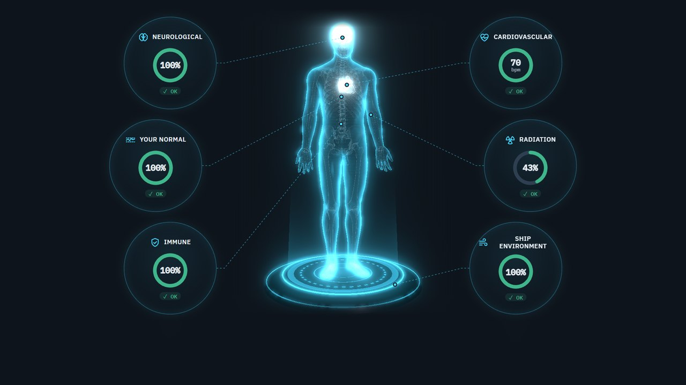
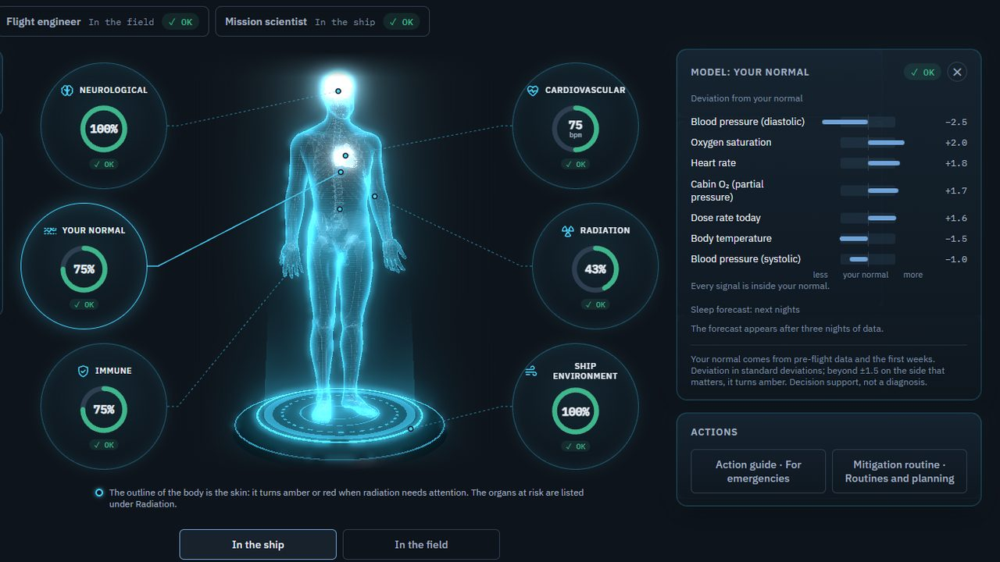
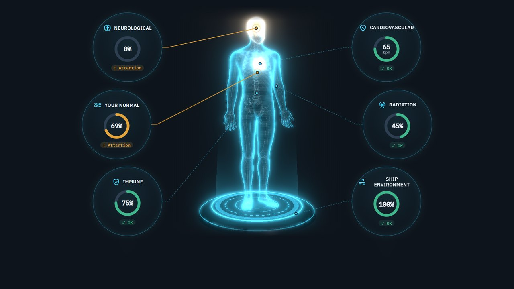
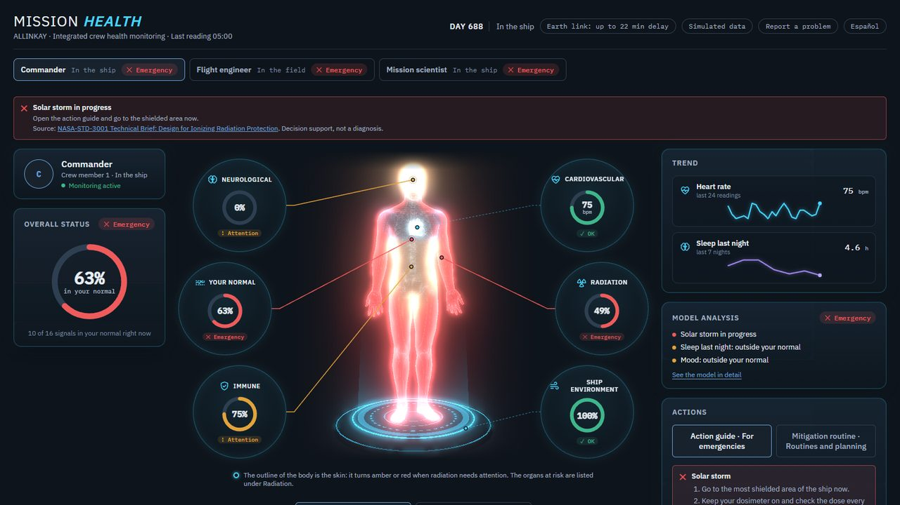
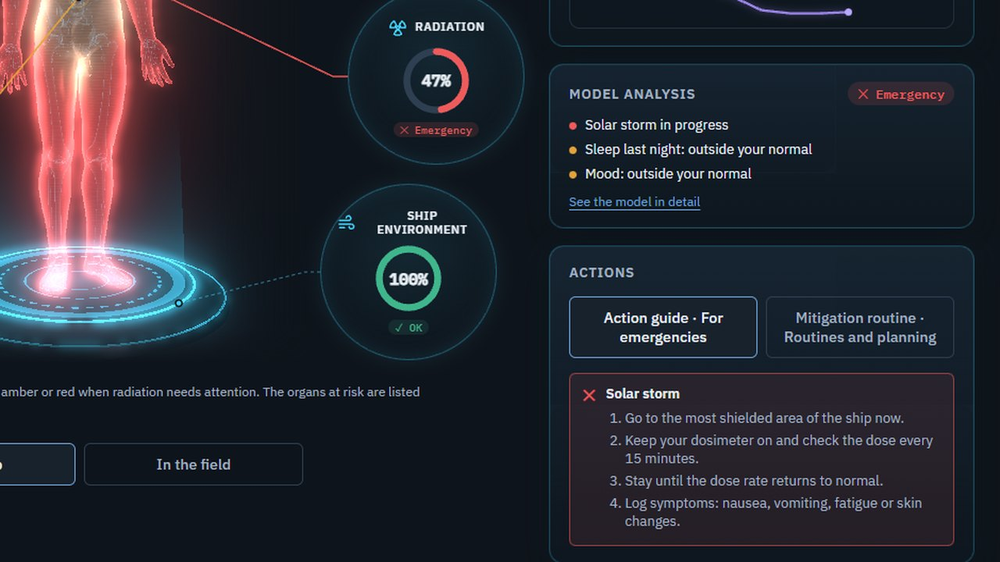

The mission in 30 seconds
Seven moments from the live app, in the order a crew would live them.

The mission. On the way to Mars, three crew members are up to 22 minutes from Earth. ALLINKAY watches each of them, on board.
Help is 22 minutes away. General ranges hide what changes in one person.
After landing, three of the four Inspiration4 crew members had 14 to 27% fewer white blood cells than before flight, and none of them left the general range. NASA OSDR, OSD-569
The problem. A fixed range says “normal” when the person is not.

Your normal. Every signal is measured against the astronaut's own baseline, built before flight.

Confirmed. One bad night is not an alarm. A change must hold: 10 live readings in a row, or 3 of the last 4 days.

A real storm. The dose Curiosity measured on its way to Mars, 8 March 2012: ten times the usual, and the whole crew gets the emergency.

What to do. The guide says what to do now: go to the shielded area, keep the dosimeter on, log symptoms.
Measured, not promised.
In 200 simulated people over 90 days: 1 false alarm every 12 astronaut-years in the ship, none in 55 in the field, and 1195 of 1200 changes caught within 10 days.
The result. Decision support, not a diagnosis. A simulated crew, with real NASA radiation and lab data.